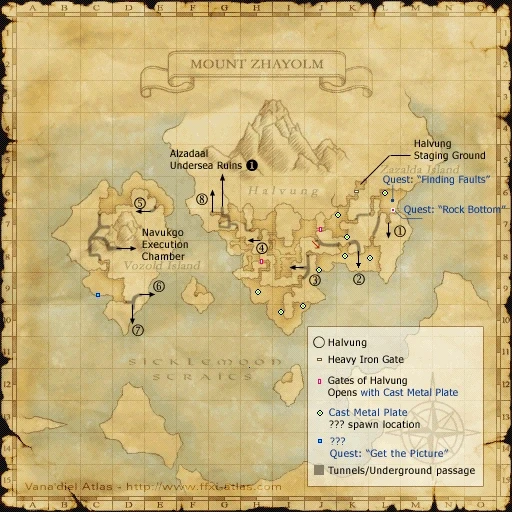

Level 75 reference · Zenith rules


Image source
Cast Metal Plate
Description:
A long, thin plate of metal you found in Mount Zhayolm. A distinctive pattern is inscribed upon its surface.
Obtained:
??? in Mount Zhayolm
Notes:
- You must check one of the Gates of Halvung located at (J-7) or (H-8) for a description of the lock before you can obtain this key item. (Re-zoning requires a recheck of the Gates)
- The ??? in question does not ever give the message "There is a detached part here...". That ???, found on a round manhole cover in (L-8), is reportedly for the Puppetmaster AF3 Quest.
Adapted from Eden Wiki: Cast Metal Plate · Contributors and history · CC BY-SA 4.0. Revision 5567. Layout, links and optional background text adapted for Zenith.